User Interface & Navigation¶
Ethos can be operated entirely with the right-hand rotary encoder (turn
to move the highlight, press for ENT) and the RTN key to back out of a
menu — the touchscreen, where fitted, is a shortcut for the same actions,
not a separate way of working. MDL, DISP, and SYS jump straight to
Model Setup, Configure Screens, and System Setup respectively (the same
three tiles as the bottom bar); a long press on RTN from anywhere returns
straight to the home screen.
The reset menu¶
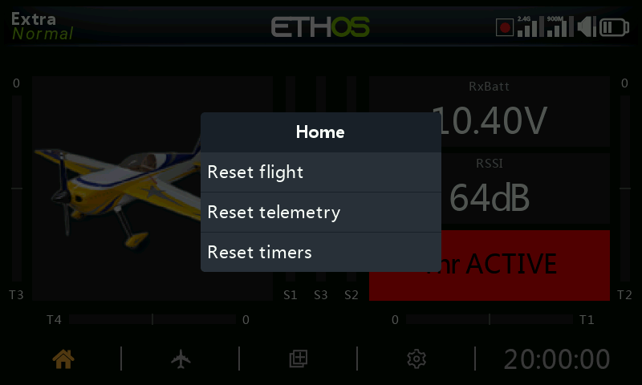
A long press on ENT from the home screen opens a reset menu:
- Reset flight — resets telemetry, timers, and function switches, and re-runs the pre-flight checklist.
- Reset telemetry — resets telemetry only.
- Reset timers — resets timers only.
- Lock touchscreen — also reachable by pressing
ENT+PAGEtogether for one second from the home screen, or as a special function trigger.
Editing controls¶
Adding functional elements — a timer, logical switch, special
function, curve, or variable is created by tapping the + next to the
column headings in the relevant menu. On a non-touch radio, highlight an
existing element, press ENT, and choose Add from the menu — the same
option is available on touch radios too.
Virtual keyboard¶

Touching any text field (or pressing ENT on one) opens the on-screen
keyboard. The backspace key erases to the left of the cursor; PAGE
deletes to the right, and once the cursor reaches the end of the text,
continues deleting from the left. Touching the field itself moves the
cursor to that position — or use SYS/DISP to move it left/right without
touch. The ?123/abc key toggles the numeric keypad (which also
carries special characters):

On a non-touch radio, pressing ENT on a text field enters edit mode
directly: turn the encoder to scroll through lower case, upper case, digits,
then special characters, pressing ENT to insert each one. MDL toggles
the case of the character immediately to the right of the cursor (and
every character typed after stays in that case until toggled again).
PAGE deletes to the right of the cursor; SYS/DISP move it left/right.
Number value controls¶
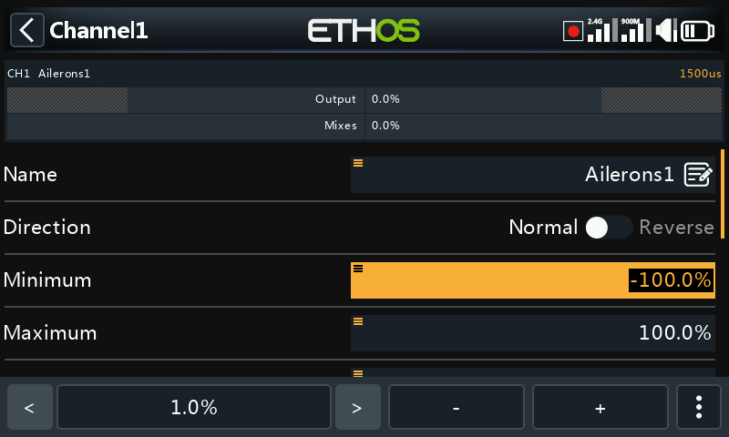
Touching a numeric field opens a control strip at the bottom of the
screen: </> change the step size (cycling between decades —
e.g. 0.01/0.1/1.0/10.0), -/+ (or the rotary encoder) adjust the
value by that step, and More opens further options:
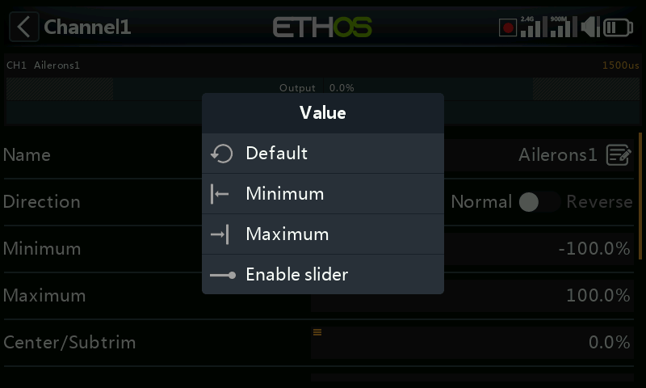
- Jump to the field's default value
- Set to minimum / set to maximum
- Replace the stepper with a slider
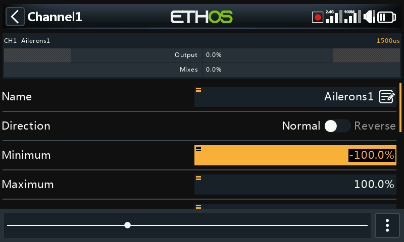
The slider (also adjustable with the rotary encoder) is faster for coarse changes; Disable slider reverts to the stepper. Telemetry range values are edited the same way:
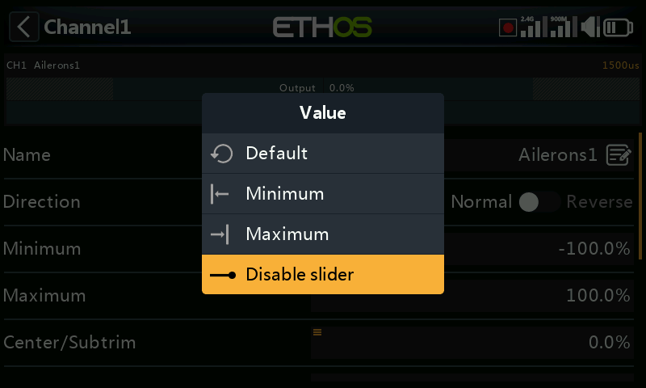
The Options feature¶
Almost anywhere a value or source is expected, a long
press on ENT opens an Options dialog — look for the small menu
("hamburger") icon in a field's top-left corner as the sign that it's
available.
Value options¶
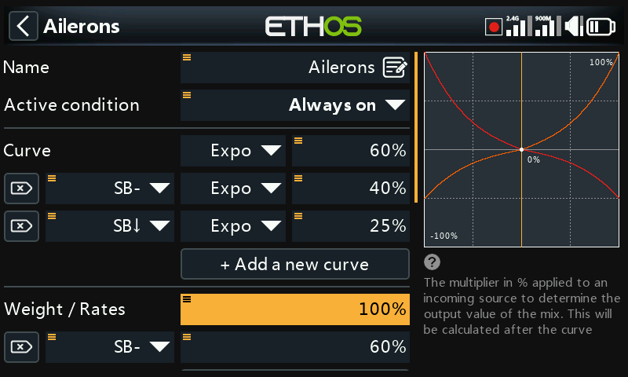
The value options dialog names the parameter being edited and offers a choice between fixed minimum/maximum or driving it from a source (e.g. a pot, to adjust the value in flight). If the field already uses a source, the same long press instead offers to convert that source's current value into a fixed value:
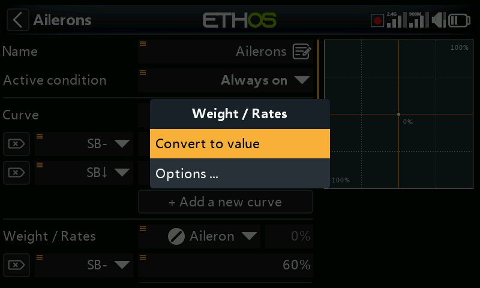
Choosing a source¶
Selecting Choose a source opens a two-column picker — a category first (analogs, switches, logical switches, trims, channels, a gyro axis, a trainer channel, a timer, a telemetry sensor, or a handful of special values), then the specific member of it:

Once a source is set, the same long press opens options specific to what kind of source it is:
Any source —
- Invert — negates the source (e.g. active when a switch is not up, instead of when it is).
- Edge — fires once on a transition (false→true or true→false) rather
than staying active for the whole state; shown with a
†prefix on the source. Available on switches generally, and specifically on the Sticky logical switch trigger condition.
Stick sources — calibration/subtrim-style options:
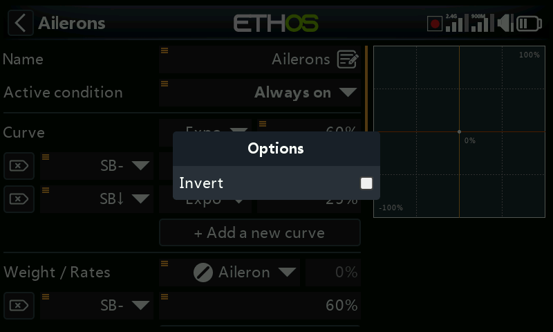
Switch sources —

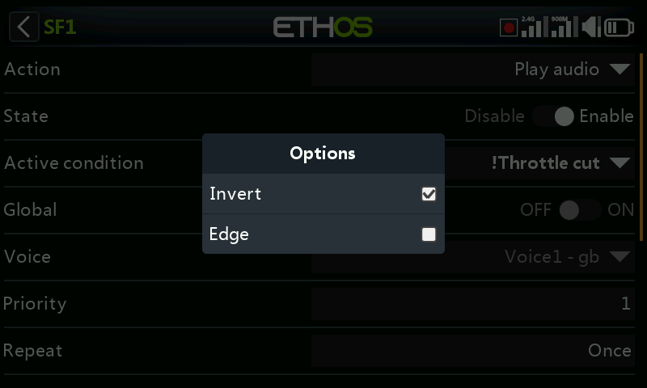
- Invert — inverts the switch action.
- Half range — for a 2-position switch or logical switch, changes its output range from ±100% to 0–100%.
Throttle sources — the throttle input has its own extra options:
- Positive — only the positive-going half of the input feeds the mix.
- Negative — only the negative-going half of the input feeds the mix. Positive/Negative together are the usual way to split a single surface-model trigger into throttle (positive half) and brake (negative half).
- Invert — reverses the input.
- Ignore trainer input — see below.
Trim sources —
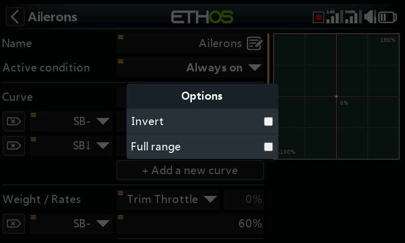
- Invert — inverts the trim action (useful inside a free mix's Actions).
- Full range — trims default to ±25%; as a source this can be widened
to ±100% with a long press on
ENTon the trim. - Ignore trainer input — on a logical switch, excludes trainer-input movement from tripping the switch. Typical use: detecting the master trainer's own stick movement (e.g. to intervene instantly if the student does something wrong) without the student's stick inputs also triggering it.
Variable sources —
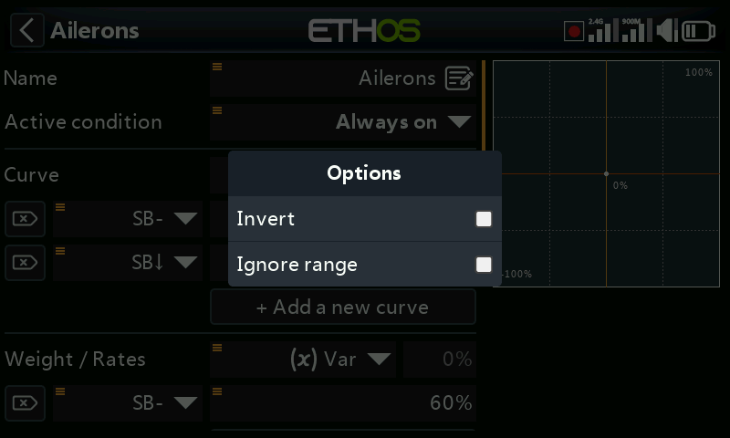
- Invert — negates the variable's value for this use.
- Ignore range — some fields have asymmetric ranges (e.g. Outputs' Min/Max, which run −150–0% and 0–150% respectively). Unless a variable used as that field's source has an identical range, enable this to skip Ethos's automatic range conversion and avoid unexpected values.
Telemetry sensor sources — reduce the source to its live minimum or maximum instead of the instantaneous reading (some sensors add further sensor-specific options beyond this):
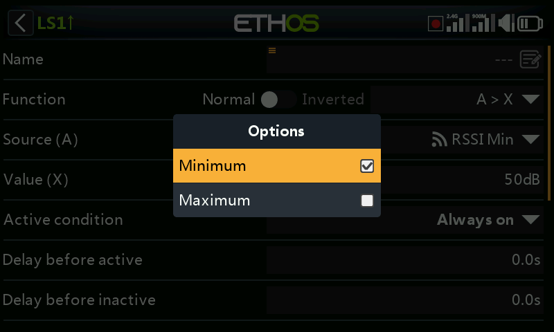
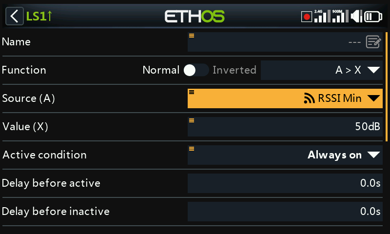